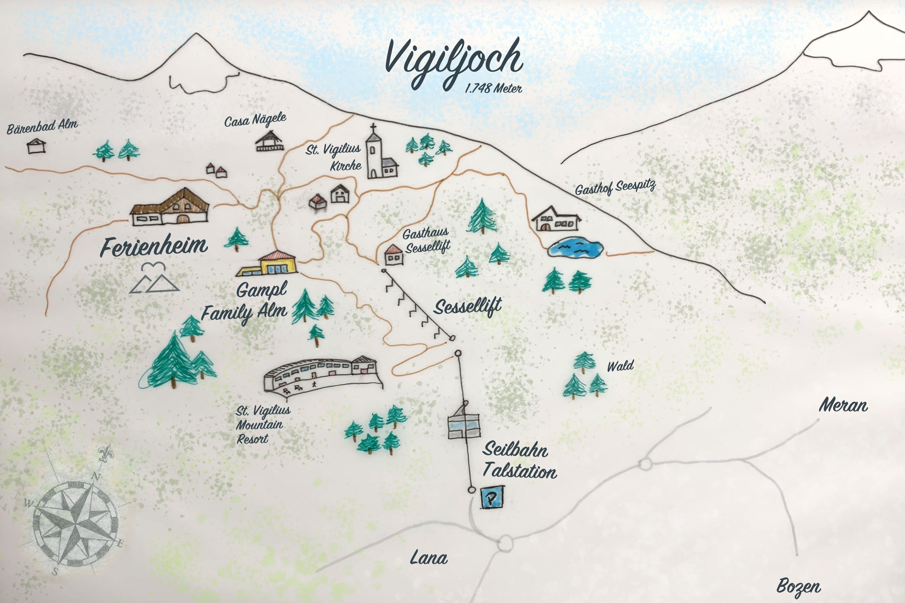

Luft & Liebe
Fünf Tage ausgelassen feiern, hoch oben auf dem Vigiljoch. Eine Auszeit nehmen vom Trubel des Alltags, etwas Bergluft schnuppern und mit uns am Samstag unsere Liebe zelebrieren. (Fast) alle unter einem Dach, ganz unkompliziert locker flockig erwarten wir euch ab Donnerstag Nachmittag im Ferienheim Vigiljoch, denn wir feiern ein Fest(ival) und freuen uns, dass du dabei bist und vielleicht auch etwas beitragen möchtest.
Anfahrt nach Südtirol
Wir sind uns bewusst, dass die Anreise nach Südtirol nicht die einfachste ist und wollen sie euch so angenehm wie möglich machen. Solltet ihr Schwierigkeiten haben von A nach B zu kommen oder habt noch einen Platz im Auto frei, den ihr vergeben möchtet, dann gebt uns bitte Bescheid - wir finden für alles eine Lösung!
Mit dem Zug
- Mit ICE nach München
- Von dort mit dem EC Richtung Bologna/Venezia/Verona bis nach Bozen
Mit dem Auto
- Bitte versucht Fahrgemeinschaften zu bilden
- Kostenlose Parkmöglichkeiten an der Schwebeseilbahn in Lana
Mit dem Flugzeug
- Von HH mit Ryanair nach Bergamo, Verona
- Von HH nach München mit Lufthansa
- Von Berlin mit Ryanair nach Bergamo, München
- Von Berlin nach München mit Lufthansa
- Von Berlin mit easyjet nach Innsbruck, Malpensa
Weg zum Ferienheim
Jetzt wird es abenteuerlich! Euch erwartet eine kurze Fahrt mit der Schwebeseilbahn von 328 auf 1486 Höhenmetern. Danach entscheidet ihr selbst - entweder eine knapp einstündige Wanderung hoch zum Ferienheim oder etwas bequemer mit dem Sessellift und nur einem kleinen Fußmarsch von 15 Minuten. Belohnt werdet ihr bei beiden Varianten mit herrlichen Ausblicken auf 1747 Metern über dem Meeresspiegel.
Unterkünfte
Ferienheim
Das Ferienheim bietet für einen Großteil der Gäste einen Platz zum schlafen. Die Zimmer verfugen über 4-8 Betten und Gemeinschaftsbädern und Warmwasser. Wer dort schläft, ist dem Geschehen am nächsten, mit allen Vor- und Nachteilen ;) Kostenpunkt: freie Spende.
Gampl Family Alm
Die in fünf Gehminuten zu erreichende Gampl Family Alm bietet Apartements für ca. 30 Leute. Die Wohnungen haben 4-6 Betten (inkl. Schlafsofas), eine wahnsinnig tolle Aussicht und natürlich wesentlich mehr Privacy und Komfort als das Ferienheim. Bitte versucht nicht selbst zu buchen sondern meldet euch bei uns. Wir haben alle verfügbaren Einheiten geblockt.
Vigilius Mountain Luxusresort
Etwa 50 Gehminuten entfernt gibt es noch eine weitere gehobene Übernachtungsmöglichkeit. Das Hotel ist für seinen hohen Standard und dementsprechende Preise bekannt. Bitte bucht eigenständig und gebt uns einfach ein kurzes Update.
Wenn ihr außerdem noch rumreisen oder einfach länger in Südtirol bleiben möchtet, gebt uns Bescheid und wir geben euch weitere Tipps zu Übernachtungsmöglichkeiten und Aktivitäten.
Volunteering
Artist Registration
Du hast Bock unser Festival künstlerisch zu unterstützen? Ob auflegen, eigenes Instrument, deine Stimme oder mit Theater, Yoga oder oder - wir freuen uns, wenn du dich einbringen willst. Hier sind deiner Fantasie keine Grenzen gesetzt, es muss nicht das Thema Hochzeit tragen, es soll nur dir und der Kolonie Spaß bringen!
Achtung: solltest du irgendeine Einlage planen, von der wir nichts wissen sollen, dann wende dich bitte an das Luft & Liebe Team (Anni, Chris, Flo)
Support Workshops
Du hast Lust an den Tagen vor dem Hauptakt tatkräftig anzupacken? Es gibt sicher noch einiges zu tun und wir können jede helfende Hand brauchen, sei es beim Aufbau, in der Küche oder beim Feuer und Stockbrot machen. Näheres erfährst du im Newsletter.
Geschenke
Unser größtes Geschenk ist es, dass du den Weg auf dich nimmst und dabei bist. Wenn du trotzdem etwas schenken magst, dann freuen wir uns über eine Spende für unseren anstehenden Love-road trip.
Und solltet ihr doch etwas ganz anderes schenken wollen, dann meldet euch einfach beim Luft & Liebe Support Team.
Freizeitaktivitäten
Es gibt zahlreiche wunderschöne Wanderwege, mal leichter, mal etwas schwieriger direkt vor der Haustür des Ferienheims. Also pack deine Wanderschuhe und etwas Proviant ein, mach dich auf die Socken und erkunde die Natur!
Für genügend Spiele, ob drinnen oder draußen, ist gesorgt - lass dich einfach überraschen!